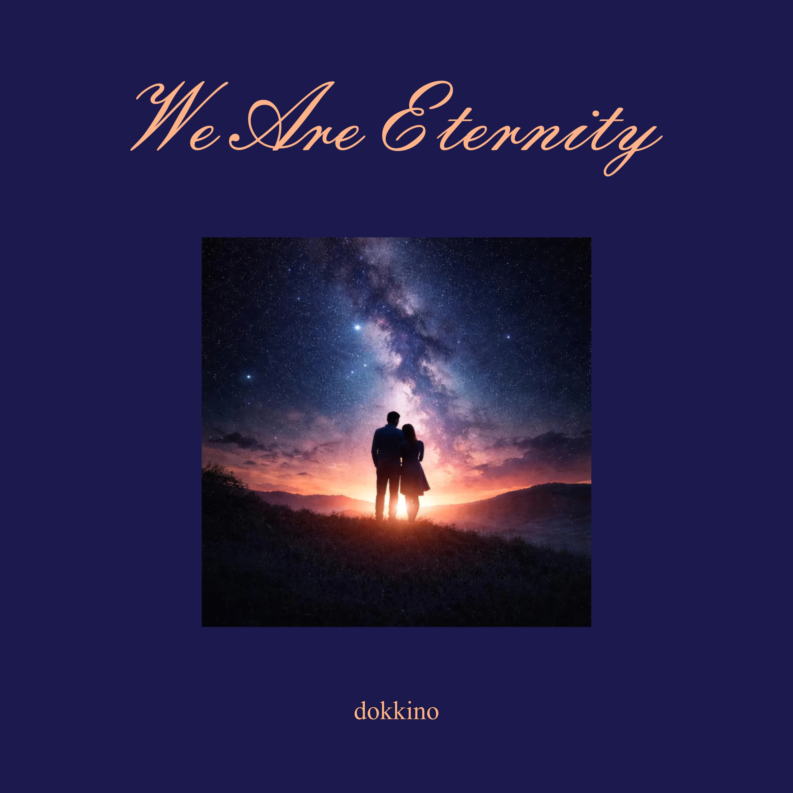

Автор текста: Сергей Мачуляк, 2020
Английская адаптация: Сергей Мачуляк
Музыка: Сергей Мачуляк
Релиз: 20 января 2026
© Сергей Мачуляк. Все права защищены.
We Are Eternity — кинематографическая баллада о долгожданной встрече, которую герой когда-то просил у самой Судьбы.
Судьба в песне становится женским образом — той загадочной «Она», которая предсказывала пути, которым так и не суждено было осуществиться. Измученная болью, даже Судьба могла ошибаться. Но двое всё-таки находят друг друга и отправляются по дороге, которой прежде для них словно не существовало.
«No clocks. No time» — центральный образ песни. Вечность здесь означает не бесконечное количество лет, а мгновение, в котором прошлое и будущее теряют свою власть. Остаются только двое и настоящее, у которого словно нет ни начала, ни конца.
«We Are Eternity» ведёт от ожидания и неопределённости к моменту, когда двое оказываются словно за пределами предсказаний Судьбы и привычного течения времени.
Tears have dried like autumn leaves,
You came into my life at last.
Not by chance, not suddenly,
An answer I had asked.
I begged my fate on bended knees,
I bowed, I prayed, I learned to wait.
Your shadow crossed my fate.
No clocks,
No time,
We are eternity.
She once told what never lived,
Spoke of paths that couldn’t be.
She was wrong, worn by pain,
But we are walking side by side,
Down a road that slowly breathes.
No clocks,
No time,
We are eternity.
We are eternity.
You and I until the end,
No before, no after then.
No beginning, no goodbye,
Only now that stays alive.
No clocks,
No time,
We are eternity.
We are eternity.